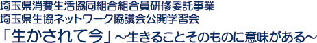
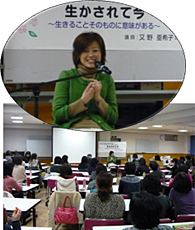

|

|
■生協ネットワーク協議会滝澤会長あいさつ 「人は命を授かったことでだれからも認められている」親鸞聖人の言葉です。講師の又野さんの著書や、人権等、ご講演されているお話から通じるものを感じています。今日のご講演がみなさんの元気や力となり、活動の場やご家族へ伝えていただければと思います。 ■講演概要 昨年テレビで放映されたDVDを視聴後、ご講演いただきました。事故は突然でした。通勤途中の交通事故。頸椎と骨髄(頭とつながっている神経の束)の損傷。4～5時間の命と言われたましが頸椎の手術(麻痺がひどくならないための手術)の成功。しかし、手術後は動かない手、どこにあるかわからない足、今まで、できたことができない、坊主になった頭にも戸惑いました。昼は前向きになれますが、夜は生きていくのが怖く、薬なしでは眠れません。短時間寝ては目を覚まし、死ぬ事ばかり考え、でも一人になれない、動けない、死ぬこともできません。入院生活も2カ月するとリハビリの為に転院です。訓練では動かないところを動くところで補い、日常生活への機能をつけていきます。リハビリが進み退院ですが、大変不安でした。病院は守られている環境で周りの友達もみな障害を持っています。しかし、退院すると環境の違いや他人の目が気になります。家族も急にしょうがい者が加わる事で戸惑ったと思います。毎日イライラもしています。何をするにしてもとても時間がかかります。でも、「アッコはアッコだよ」と言ってくれる家族や友達が支えてくれました。そんな中、妊娠し子供に恵まれました。お母さんになれた喜びは、生かされたことの意味だと思いました。育児は育自。子供の何事にも前向きな様子から、大人になって忘れたものを思い出します。小・中・高等学校での講演会後、死にたいと思っていたと言う子どもが何人もいることはショックでした。子供たちに伝えたいことは、苦難を乗り越えるのは自分次第。立ち向かうと助けてくれる人、応援してくれる人がいます。小さくささやかな夢でもいい、夢を持ってほしい。苦難を乗り越える力になり、道は開けます。堂々と歩んでほしい。年齢による自立も重要です。終わりに、どの命も輝いている。ひとつも無駄、価値がない、役割のない命などありません。「障害は不便だけど不幸ではない(ヘレンケラー)」。失うものは多かったけれど、得たものはそれ以上で、代わるものはありません。また、いろいろな人がいます。それを認めましょう。人は一人では生きていけません。人は支えあって生きています。自分を大切に、身近な人を大切にと心がけていくことで社会をあたたかなものに変えていけると心から思っています。 |